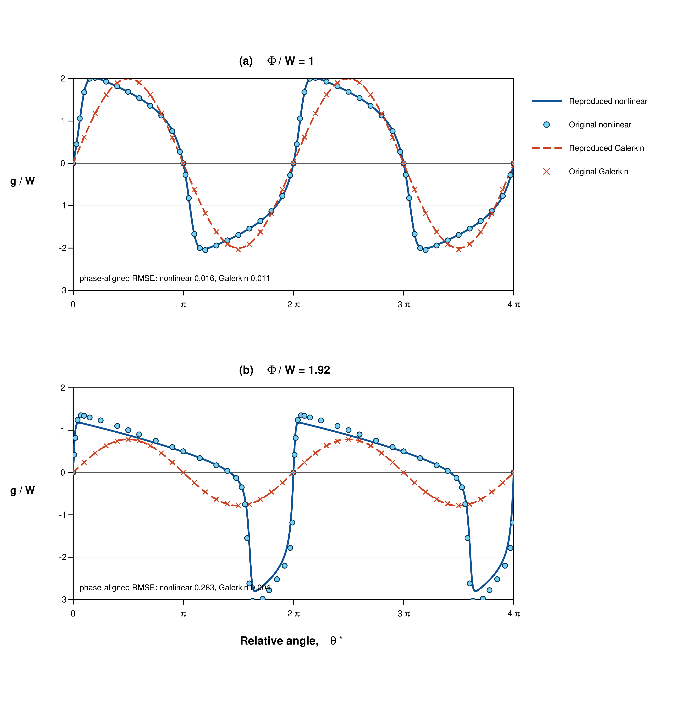

A comprehensive log of work done throughout 16.S893.
Building the course website.
For the first assignment, I built a new multi-page portfolio for the course using Pi through MIT Parley. I chose the overall scope, approved the visual direction, and supplied the personal and research content before reviewing the finished site. The exercise showed me how quickly an agent can assemble a substantial web artifact, but also how important it is to define boundaries, review factual claims, and check the result at both desktop and phone sizes.
Adding a dev-log to the site.
I added a dev-log page to the portfolio and initially treated it as a detailed record of how I had used AI agents, including message and tool-call counts. I later realized that the course dev-log was intended more broadly as my own record of what we did and learned in class. That misunderstanding prompted me to simplify the page into a human course journal rather than an audit of agent activity.
Developing a scientific-plotting skill.
For the skill-writing exercise, I adapted my existing scientific-plotting preferences into a reusable set of instructions for future agent-assisted figure work. The skill emphasizes preserving data provenance, showing individual measurements alongside summaries, documenting transformations, and keeping interpretation tied to the evidence. Writing it made clear that a procedural checklist can improve consistency, but it cannot replace my responsibility for deciding whether a scientific comparison or conclusion is actually justified.
Turning the proposal into a clear project narrative.
I turned my project proposal into a concise scrolling page that could explain the research clearly on the website while also supporting a short in-class presentation. Distilling the proposal into four sections helped clarify the progression from the CFD-analysis bottleneck to the research question, the source-and-vorticity representation, and the proposed multi-agent virtual lab. I also learned that simplifying a technical narrative is useful only if the important scientific qualifications remain visible.
Reconstructing a nonlinear compressor-stall figure.
For the figure-recreation assignment, I reproduced both panels of Figure 5 from Moore and Greitzer's 1986 post-stall compressor paper. I used the paper's equations to calculate the analytical Galerkin curves and solve the nonlinear traveling-wave problem, then compared both results with points digitized from the publication. The sharper second waveform did not match perfectly, which highlighted how difficult exact reproduction becomes when a paper delegates important numerical details to earlier references.

Calculated nonlinear and Galerkin curves overlaid with digitized points from Moore and Greitzer (1986), Figure 5.